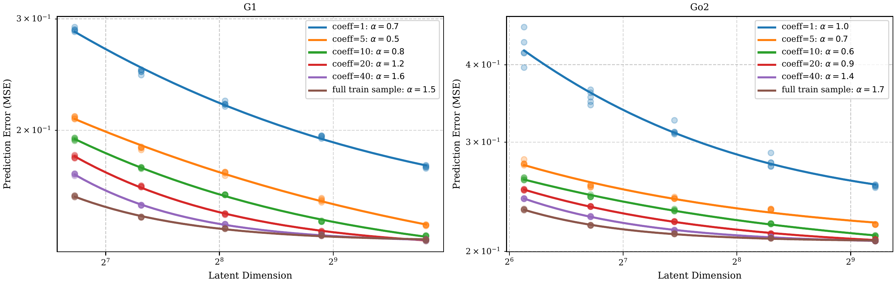
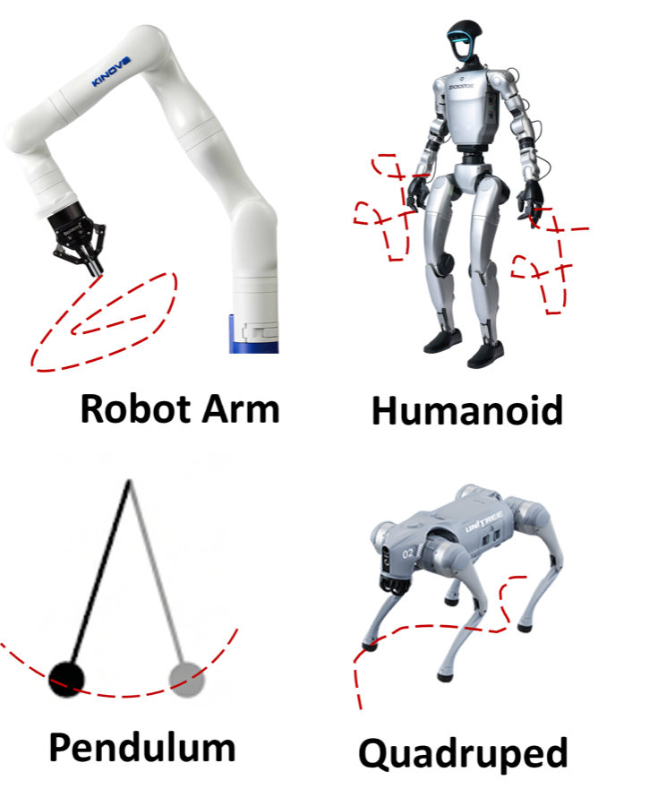

Scaling Law of Neural Koopman Operators
Scaling laws for learning linear models of nonlinear robots. A bigger latent space helps only when the data can support it: we show how much data a latent dimension needs, and how to scale the two together.
The idea
Nonlinear robot in.
Linear model out.
A neural Koopman model encodes the robot's state into a latent space where the dynamics are linear, z+ = Az + Bu. Prediction becomes a matrix product, and model predictive control becomes a convex quadratic program.

Live demo · Prediction
See a linear model predict a nonlinear pendulum.
The solid pendulum is simulated with its true nonlinear dynamics. The teal ghost is the learned Koopman model: it encodes the state once, then predicts only by multiplying by A and adding Bu.
The model was trained with the released code (scripts/export_page_demo.py) on swings within ±90° under random torques, and A, B were re-estimated by least squares (EDMD) on fresh data, as in our theory. On held-out swings, the median forecast error of the angle is 1.1° after 0.3 s, 3.1° after 1 s, and 3.5° after 2 s.
Live demo · Control
Control it with a linear model.
Model predictive control plans 15 steps ahead on the learned linear model and re-encodes the measured state at every step. Pick a target angle, or push the pendulum.
Holding a tilted angle needs a constant torque against gravity; the controller finds it from the linear model alone. In simulation from random starts, it settles within 0.7° of targets between −30° and +30°.
The scaling law
How much data does a latent dimension need?
We split the error into what finite data cannot estimate and what a finite latent space cannot represent, and bound both.
κn ≥ n is the leverage constant of the latent subspace (of order n for well-spread features); β is how fast n features can represent the next-state map. Valid once m ≳ κn ln n.
The data × capacity landscape
A data threshold. Stable estimation needs at least this much data. Below it, a larger latent space predicts worse.
Coupled scaling. Growing data this way keeps the sampling error at c−1/2 for every latent dimension.
A best latent size. For a fixed data budget, the bound is smallest here. It grows slowly with data.
One data budget at a time
Both views plot the bound with unit constants and κn = n. They illustrate the shape of the trade-off; the constants in a real system differ. β is shared between the two views.

Try it · Real models
Pick the data. Pick the model.
Twenty-one neural Koopman models of the pendulum, trained with the released code on 2 to 16,000 trajectories and three latent sizes. Each one forecasts live, and the grid shows what we measured. With very little data, the small model wins and the large one can even become unstable. From 20 trajectories on, the largest latent space is best. The best latent size grows with the data, as the scaling law predicts.
Measured forecast error after 1 s (median angle error)
Click a cell to load that model · ★ best latent size for that data · ⚠ fewer transitions than n ln nEach model is trained with scripts/export_page_demo.py --grid on swings within ±90°. Its linear model (A, B) is re-estimated by least squares on the same training trajectories, so every model uses exactly its data budget. Errors are medians over 300 held-out swings with the same random torques as the demo, one training seed per cell; the forecast restarts from the measured state every second. Each trajectory has 15 transitions.
Method
Train for prediction.
Regularize for control.
Accurate prediction alone does not make a model good for control. Two lightweight losses join the multi-step prediction loss.
Multi-step rollout
Roll the linear latent model forward 15 steps and penalize the error of the predicted physical state.
Decorrelated features
Penalize correlations between learned features. Redundant features disappear and conditioning improves.
Recoverable inputs
Reconstruct the applied input from consecutive latent states with the pseudo-inverse of B, so the model keeps track of what the controls do.
Results
From pendulums to humanoids.
Damping and double pendulums, a Franka arm, a Unitree Go2 quadruped, and a Unitree G1 humanoid, with up to 140k training trajectories and latent spaces up to 17× the state dimension.

is the data scale larger latent spaces need. Below it, G1 and Go2 predict worse with more capacity.
training trajectories bring G1 and Go2 close to the accuracy of the full dataset.
more survival steps for Go2 locomotion with both auxiliary losses, at the largest dataset.
lower Franka figure-eight tracking error with both auxiliary losses, at the largest dataset.
Prediction is not control
The auxiliary losses change open-loop prediction error by less than 5%, yet improve closed-loop control, most on the Go2 quadruped.
Conditioning, not accuracy
The covariance loss lowers the condition number of the learned features severalfold at every data size, while open-loop error stays the same, as the basis-invariant theory predicts.
Limits
- The finite-sample guarantees hold for a fixed feature space (or one trained on separate data) and i.i.d. samples. Encoders trained on the same data need an additional generalization argument.
- The coefficient 40 in m = 40 n ln n is empirical for the tested systems.
- G1 and Go2 results are in simulation.
Citation
Cite this work.
@article{abuduweili2026scaling,
title = {Scaling Law of Neural {Koopman} Operators},
author = {Abuduweili, Abulikemu and Pang, Yuyang and Li, Feihan and Liu, Changliu},
journal = {arXiv preprint arXiv:2602.19943},
year = {2026}
}